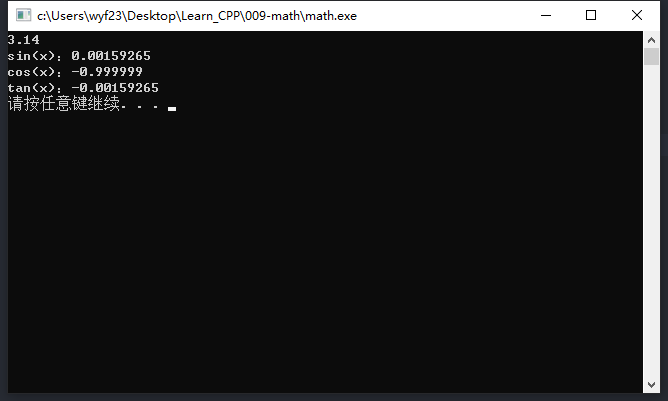
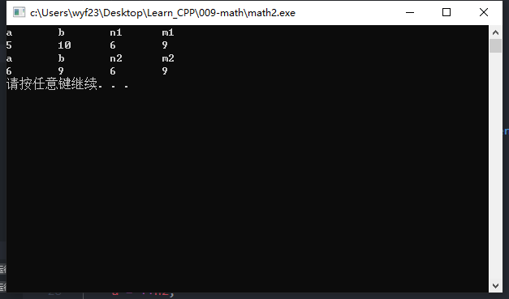

算数运算
- 表示运算的符号称为运算符
- 算数运算
- 比较运算
1. 算数运算
- 算数运算包括加、减、乘、除、乘方、指数、对数、三角函数、求余数等，这些都是算数运算。
- C++中用+，-，*，/，%分别表示加、减、乘、除、求余运算，例如：
a+b，a-b，a*b，a/b 若a，b都是整数，则a%b表示a除以b的余数，如：
1
2
3int a=26;//声明整型变量a并初始化为26
int b=10;//声明整型变量b并赋初值10
cout << a % b << endl;得到的结果就是6
- 注意事项
- 乘法运算符不能省略
数学中写$b^2-4ac$，程序中应写为$bb-4.0a*c$,不可以写成$bb-4ac$ - 除数是表达式时注意加括号，例如：
$\dfrac{x}{2a}$在C++中应写为：x/2.0/a 或 x/(2.0a)
不可以写成x/2a 或 x/2a
- 乘法运算符不能省略
- 其他运算符的实现
- C++中没有乘方运算符，也没有指数、对数、三角函数的运算符，它们是通过函数的调用实现的。如：
pow(x,n)——————$x^n$
exp(x)———————$e^x$
log(x)———————$log_ex$
log10(x)——————$lg_x$
sin(x)———————$sinx$（弧度）
cos(x)———————$cos(x)$（弧度）
tan(x)———————$tanx$（弧度）
1/tan(x)——————$cotx$（弧度）
asin(x)——————-$x\in[-1,1]$
- C++中没有乘方运算符，也没有指数、对数、三角函数的运算符，它们是通过函数的调用实现的。如：
它们都属于数学函数，使用时需要在程序的开头写
1
示例代码
1
2
3
4
5
6
7
8
9
10
11
12
13
using namespace std;
int main()
{
double x;
cin >> x;
cout << "sin(x)：" << sin(x) << endl;
cout << "cos(x)：" << cos(x) << endl;
cout << "tan(x)：" << tan(x) << endl;
system("pause");
return 0;
}执行结果

2. 自增自减运算符
- 介绍
- i = i + 1;
- i = i - 1;
- 自增运算符 ++
- 自减运算符 —
- 前置++：++i，前置—：—i
- 后置++：i++，后置—：i—
作用
无论前置、后置，++使变量自身加1，—使变量自身减1
1
2
3
4
5int n = 5,m = 10;
n++; //相当于 n = n + 1;
m--; //相当于 m = m - 1;
cout << n << endl; //结果为6
cout << m << endl; //结果为9作为表达式时，前置运算符的结果是加1或减1之后的结果；后置运算符的结果是加1或减1之前的结果。
示例代码
1
2
3
4
5
6
7
8
9
10
11
12
13
14
15
16
17
18
19
20
21
22
23
24
25
26
27
28
29
30
31
32
33
using namespace std;
int main()
{
int n1 = 5, m1 = 10;
int n2 = 5, m2 = 10;
int a, b, c, d; //声明整型变量
/*以下为后置输出*/
cout << "a"
<< "\t"
<< "b"
<< "\t"
<< "n1"
<< "\t"
<< "m1" << endl;
a = n1++;
b = m1--;
cout << a << "\t" << b << "\t" << n1 << "\t" << m1 << endl;
/*以下为前置输出*/
cout << "a"
<< "\t"
<< "b"
<< "\t"
<< "n2"
<< "\t"
<< "m2" << endl;
a = ++n2;
b = --m2;
cout << a << "\t" << b << "\t" << n2 << "\t" << m2 << endl;
system("pause");
return 0;
}执行结果

建议
使用单独的表达式语句
1
2
3
4
5int n = 20;
i++;
i--;
++i;
--i;尽量不将其放入表达式中
1
2
3int a,n = 10;
a = i+++i++;//不推荐
cout << i++ << "\t" << i++ << "\t" << i++ << endl;//绝对不用
3. 算数运算符的优先级
- 先乘除求余，后加减，级别相同的从左向右逐个计算
$1+2*3, 2+3+4，6*2/3$ - 圆括号可以改变优先级
$(1+2)*3$ - 圆括号可以嵌套，越靠里，圆括号的优先级越高
$((1+2)3+(2+3)2)*7$ - %和*，/优先级别相同
- 后置++、—的优先级高于前置++，—的优先级
- 前置++，—的优先级高于乘除的优先级
4. 运算的数据类型
- 相同类型的数据进行算数运算，结果还是这种数据类型
- 1 + 2，1 - 2，1 * 2，1 / 2（1 / 2的结果是0而不是0.5）
- 1.0 + 2.0，1.0 - 2.0，1.0 * 2.0，1.0 / 2.0（1.0/2.0的结果0.5）
- 不同类型的数据运算，默认向级别高的类型转换
（低） short，char → int → unsigned → long → double （高）
char + int → int
int + double → double 强制类型转换
- (<类型>)x 或 <类型>(x)
- 将x转换为<类型>的数据
x可以是表达式
1
2
3(double)a / b
int(3.0 / 2.0)
double(1 / 2 )高精度 → 低精度，会损失有效数字
5. 复合运算符
- 为简化书写，C++提供复合算数运算符
+=，-=，*=，/=，%= - 双目运算符
a += b 等价于 a = a + b
a -= b 等价于 a = a - b
a = b 等价于 a = a b
a /= b 等价于 a = a / b
a %= b 等价于 a = a % b